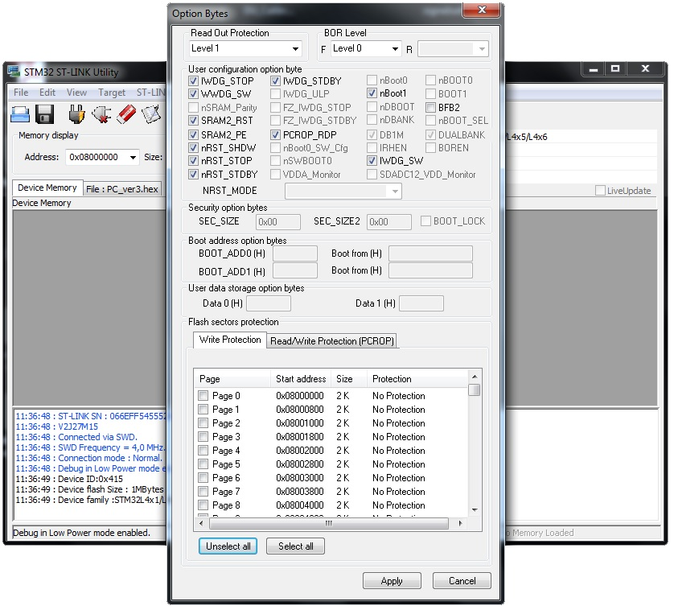

↑
БОИ-4. Прошивка платы преобразователя
- Подключить программатор К ПК
- Запустить программу STM32LINK Utility.
В меню File→Open File находим прошивку для БОИ-4
- Подключаем плату «Преобразователь»(БОИ-4) к программатору через разъём Molex и подаём питание на плату
«Преобразователь» (соединив её с КПК или запитав от источника питания)
- Меню Target→Option Bytes, в Read Out Protection ставим Level 1 и галочки как на рисунке

Далее нажимаем Apply
- Если нужно запрограммировать партию плат, то выполняем следующее:
Меню Target→Automatic Mode ставим галочку Option Bytes configuration . Нажимаем
Сonfigure… Проверяем все ли галочки на месте. Нажимаем Apply.
Далее Start.
Когда программирование закончится, в командной строке выйдет сообщение Please disconnect device №1
- Отсоедините плату от КПК и программатора.
- Подсоедините следующую плату, программирование начнется автоматически.